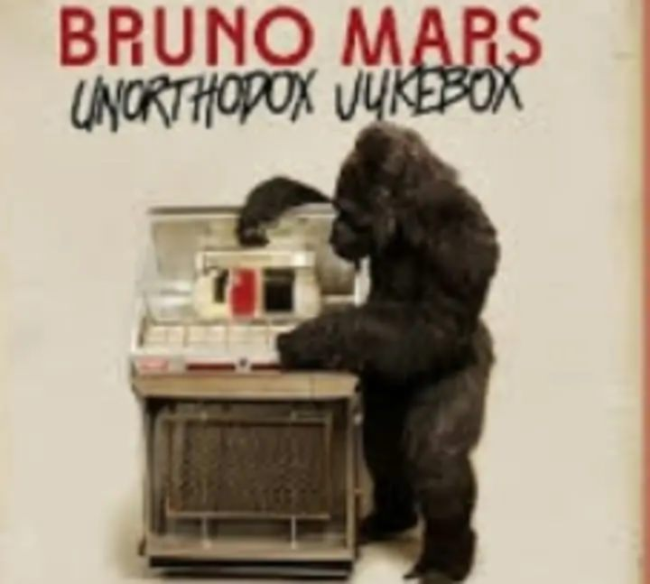

Bruno Mars ‧ 2012
Made by: Impon, Rusthyjade H.

Same bed but it feels just a little bit bigger now
Our song on the radio but it don't sound the same
When our friends talk about you, all it does is just tear me down
'Cause my heart breaks a little when I hear your name
It all just sounds like ooh, ooh, ooh, hoo
Mm, too young, too dumb to realize
That I should have bought you flowers
And held your hand
Should have gave you all my hours
When I had the chance
Take you to every party 'cause all you wanted to do was dance
Now my baby's dancing
But she's dancing with another man
Uh, my pride, my ego, my needs, and my selfish ways
Caused a good strong woman like you to walk out my life
Now I'll never, never get to clean up the mess I made, oh
And that haunts me every time I close my eyes
It all just sounds like ooh, ooh, ooh, hoo
Mm, too young, too dumb to realize
That I should have bought you flowers
And held your hand
Should have gave you all my hours
When I had the chance
Take you to every party 'cause all you wanted to do was dance
Now my baby's dancing
But she's dancing with another man
Although it hurts
I'll be the first to say that I was wrong
Oh, I know I'm probably much too late
To try and apologize for my mistakes
But I just want you to know
I hope he buys you flowers
I hope he holds your hand
Give you all his hours
When he has the chance
Take you to every party
'Cause I remember how much you love to dance
Do all the things I should have done
When I was your man
Do all the things I should have done
When I was your man